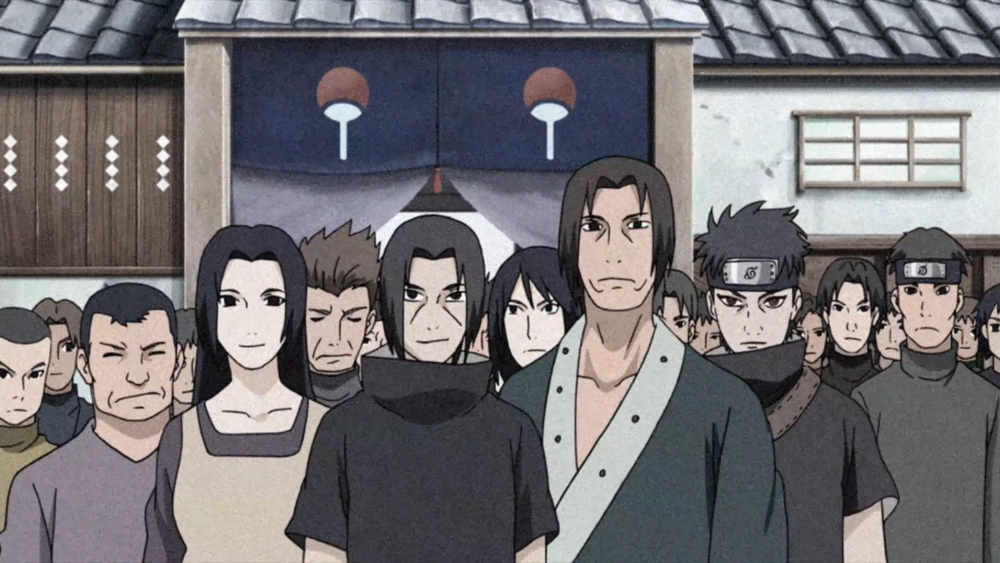
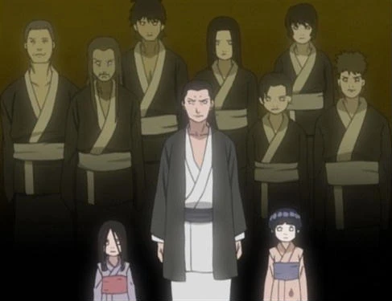
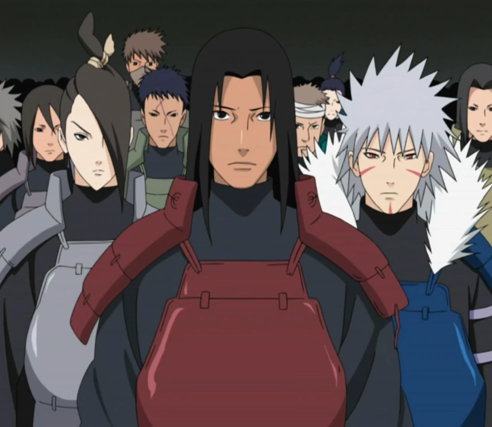
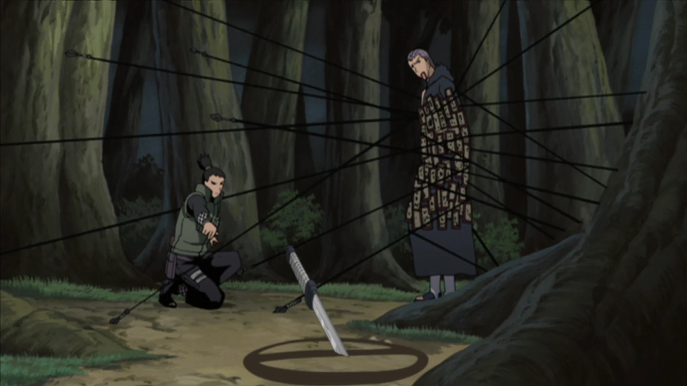
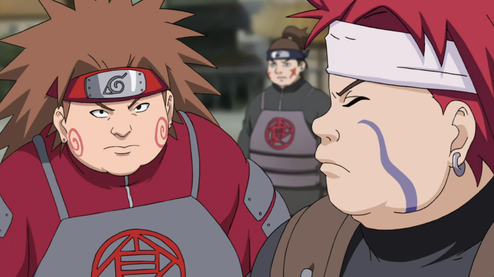
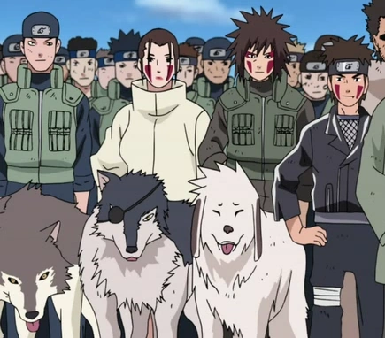
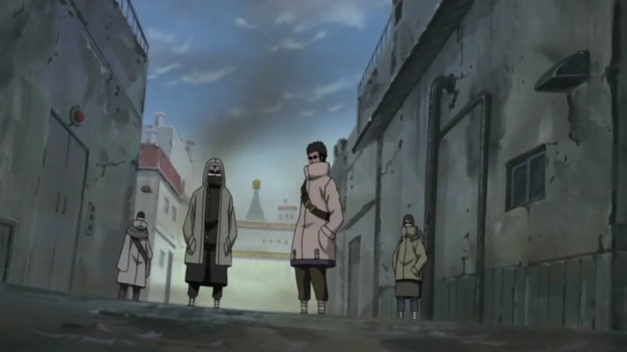
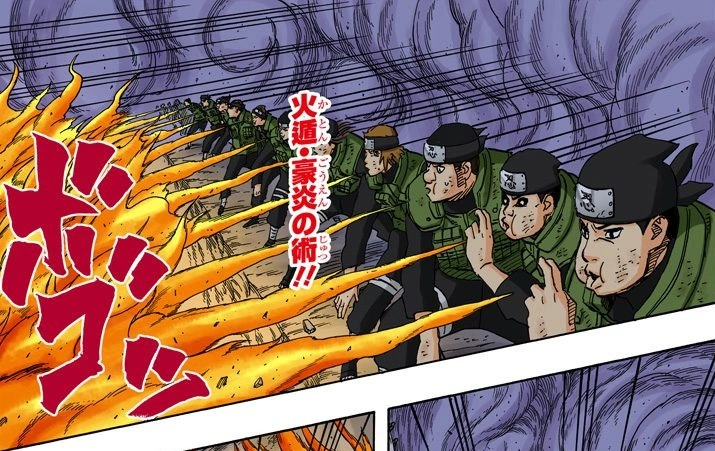
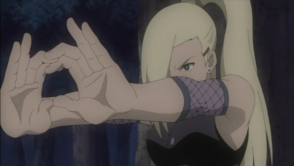

Clã Uchiha
Habilidade Especial:
Sharingan - Permite copiar técnicas, prever movimentos inimigos e
lançar genjutsus poderosos.
Peculiaridade:
O Sharingan
evolui com o uso em batalha, desbloqueando níveis mais avançados
como Mangekyou, que concede técnicas devastadoras.
Consequência:
O uso intenso do Sharingan causa fadiga ocular extrema, dores de
cabeça lancinantes, perda progressiva da visão e, em casos
extremos, cegueira permanente. Além disso, técnicas avançadas
drenam a energia vital, podendo levar a colapsos físicos.

Clã Hyuga
Habilidade Especial:
Byakugan - Visão de 360 graus, capacidade de enxergar o sistema de
chakra e pontos vitais do inimigo.
Peculiaridade:
Permite ataques
precisos nos pontos de chakra, bloqueando o fluxo de energia do
adversário e desabilitando suas técnicas.
Consequência:
O uso prolongado do Byakugan causa dores de cabeça severas,
visão turva, náuseas e, em casos extremos, pode levar a
desorientação e perda temporária da visão, deixando o usuário
vulnerável.

Clã Senju
Habilidade Especial:
Vitalidade e Controle de Chakra - Regeneração acelerada e grande
reserva de chakra.
Peculiaridade:
Capacidade de
curar ferimentos rapidamente e usar técnicas poderosas por mais
tempo, mantendo alta resistência física.
Consequência:
Excesso de uso pode causar exaustão extrema, colapsos temporários,
falhas no sistema imunológico e vulnerabilidade a ataques
surpresa durante a recuperação.

Clã Nara
Habilidade Especial:
Controle das Sombras - Manipula sombras para prender e imobilizar
inimigos.
Peculiaridade:
Pode estender
sombras para longas distâncias, criar armadilhas e manipular o
ambiente para controle tático.
Consequência:
Uso prolongado causa fadiga muscular intensa, dores nas articulações,
rigidez e perda temporária de mobilidade, podendo deixar o usuário
incapacitado em combates longos.

Clã Akimichi
Habilidade Especial:
Expansão Corporal - Pode aumentar partes do corpo para ataques
poderosos e defesa temporária.
Peculiaridade:
Aumenta força,
alcance e resistência dos golpes, podendo esmagar inimigos e
absorver impactos.
Consequência:
Uso excessivo causa gasto energético massivo, lentidão extrema,
dores musculares severas e risco de ruptura muscular, deixando o
usuário vulnerável após o efeito passar.

Clã Inuzuka
Habilidade Especial:
Sinergia com Cães - Aumenta sentidos, força e velocidade em
parceria com cães de caça.
Peculiaridade:
Pode farejar
inimigos a grandes distâncias e realizar ataques coordenados
com seu cão, aumentando a eficácia em emboscadas.
Consequência:
Dependência extrema do parceiro canino. Se separados, o usuário
sofre queda drástica nos sentidos, perda de força e queda de
moral, podendo entrar em estado de desespero.

Clã Aburame
Habilidade Especial:
Controle de Insetos - Usa insetos para espionagem, ataque e defesa.
Peculiaridade:
Insetos podem
se infiltrar em áreas inimigas, atacar em enxame e proteger o
usuário de ataques surpresa.
Consequência:
Uso excessivo pode enfraquecer o usuário, causar reações alérgicas
graves, infecções e até intoxicação, comprometendo a saúde a
longo prazo.

Clã Sarutobi
Habilidade Especial:
Mestre em Jutsus - Versatilidade em técnicas ninjas e combate corpo
a corpo.
Peculiaridade:
Pode adaptar
rapidamente estratégias em batalha, combinando ninjutsus, taijutsus
e genjutsus com maestria.
Consequência:
Uso intenso e constante pode causar desgaste mental severo,
estresse crônico, insônia e fadiga física, reduzindo a eficácia
em combates prolongados.

Clã Yamanaka
Habilidade Especial:
Técnicas Mentais - Controle mental, telepatia e leitura de mentes
para espionagem e manipulação.
Peculiaridade:
Pode acessar
mentes inimigas, compartilhar informações instantaneamente com
aliados e manipular emoções.
Consequência:
Uso prolongado pode causar dores de cabeça intensas, confusão
mental, perda temporária da consciência e risco de danos
permanentes ao sistema nervoso.

Clã Kaguya
Habilidade Especial:
Manipulação Óssea - Pode criar armas e armaduras com ossos do
próprio corpo, aumentando defesa e ataque.
Peculiaridade:
Oferece defesa
quase impenetrável e ataques devastadores, podendo moldar ossos
em diversas formas.
Consequência:
Uso excessivo causa dores intensas, fraturas internas, redução
severa da mobilidade e risco de danos permanentes ao esqueleto.